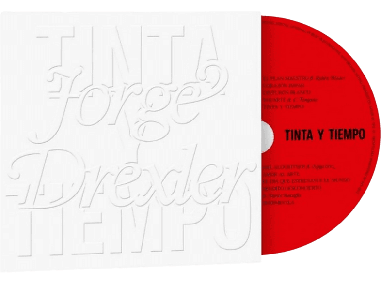

Una obra que se compone de 10 canciones, muchas de ellas creadas durante el confinamiento por la pandemia. Es una verdadera continuación de la propuesta artística del compositor y cantante, aunque también una evolución en la que logra amalgamar sus yeites característicos con novedosas incursiones en sonidos de otros géneros musicales. Cuenta con interesantes invitados, como Rubén Blades, C. Tangana, Martín Buscaglia y Noga Erez.
En "Tinta y Tiempo", canción denominada de la misma forma que el disco, predomina la guitarra acústica, destacándose la dulzura característica de la voz de Drexler donde las palabras cobran una fuerza arrasante.
